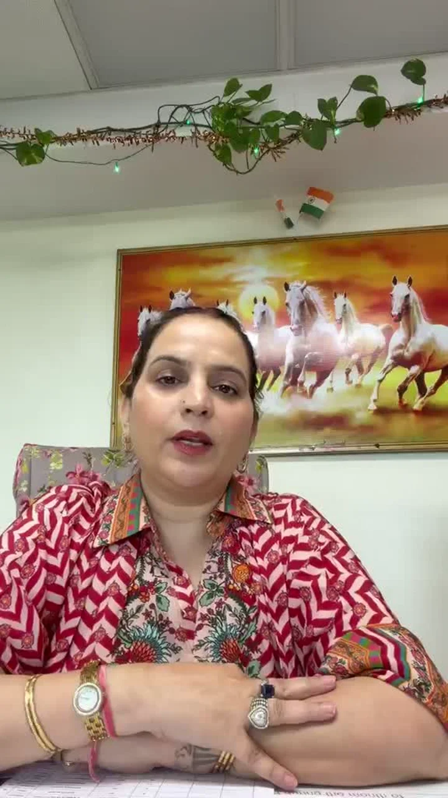

In relationships
A familiar disagreement or response keeps returning.
Narayani Garg / Author
Her mind-first perspective, in her own words.
Trusted by 10,000+ clients
Individual clients, not endorsements by their organisations.
The question you bring
CLIENT VOICES
Belief in herself
She only made me aware of the potential that was already inside me. She taught me to believe in myself, and to understand my intuition.

Being understood
Whenever we talk to her, it feels as if one of our own is lovingly showing us the right way, and trying to understand things from our side.
How Narayani approaches it
A pattern is a small chain that repeats: a thought, a belief, the words you use and a reaction. Narayani helps you see the chain, and find the one link you can reach and practise differently.
Brainology Program / at a glance
Tap a step.
WHAT THE PROGRAM DRAWS ON
WHY HER APPROACH MATTERS
Explore your beliefs and responses as you practise something new.
Ask questions and understand the reasoning. No threats or pressure to purchase a remedy.
“Upay tab kaam karta hai jab dimaag kaam karta hai.” A remedy works when the mind works.
BEGIN WITH THE NNG TEAM
Tell the team what keeps returning. You do not need to name the belief or choose a practice before you enquire.
A short message about what you want to discuss.
Confirm scope, format, duration, fees and availability.
Book only after the details work for you.
Brainology Program
No form to complete. Choose a topic if useful, or open a general enquiry.
General Brainology Program enquiry
Open WhatsApp enquiryReview the message in WhatsApp and send it yourself. Opening WhatsApp does not book or pay for a session.
Please do not send private records, home footage or someone else’s information in your first message.
One situation is enough. The team can help you find the right starting point.
No. Narayani explains each practice and suggests what fits your situation.
The team confirms scope, online or in-person format, duration, current fee and availability before booking.
Only a general enquiry. This page requests no name, birth details, medical records or third-party information.
The Brainology Program is self-development practice and spiritual guidance, not therapy or medical treatment. Continue any care you receive from a doctor or counsellor.